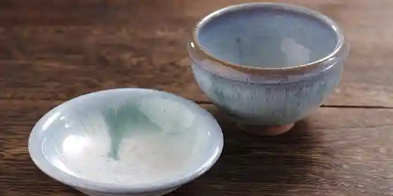
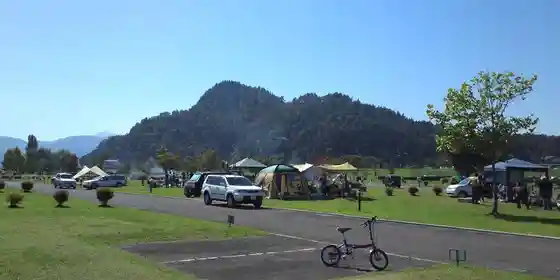
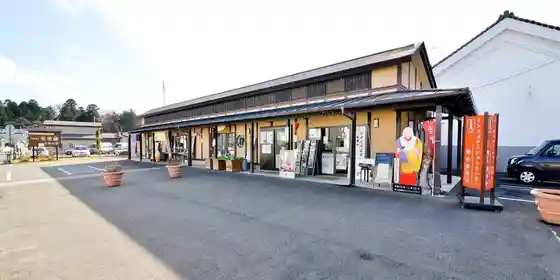

Aizu Yakushiji
Aizumisato, Fukushima · 0242-54-4876 · Official / source link
Aizuhongo Yaki
Aizumisato, Fukushima · 0242-56-3007 · Official / source link

Takada Ume
Aizumisato, Fukushima · 0242-56-4882 · Official / source link
Seseragi Park
Aizumisato, Fukushima · 0242-57-1225 · Official / source link

Misato Kura (Takada Infomeshon Center)
Aizumisato, Fukushima · 0242-54-2333 · Official / source link

Isa Sumi Shrine
Aizumisato, Fukushima · 0242-56-4882 · Official / source link
Ko Haguro Yama Castle Ruins
Aizumisato, Fukushima · 0242-56-4882 · Official / source link
Ho Yo Tera
Aizumisato, Fukushima · 0242-56-4882 · Official / source link
Yagisawa no Na no Hanahata
Aizumisato, Fukushima · 0242-56-4882 · Official / source link
Uma no Haka no Tanemaki Sakura
Aizumisato, Fukushima · 0242-56-4882 · Official / source link
Kamishiro Sakura
Aizumisato, Fukushima · 0242-56-4882 · Official / source link
Ko Onda Cherry Blossoms
Aizumisato, Fukushima · 0242-56-4882 · Official / source link
Monju In Chie Sakura
Aizumisato, Fukushima · 0242-56-4882 · Official / source link
Fujimaki Shrine no Oicho
Aizumisato, Fukushima · 0242-56-4882 · Official / source link
Kori Tama Toge
Aizumisato, Fukushima · 0242-56-4882 · Official / source link
Miyagawa no Sembonzakura
Aizumisato, Fukushima · 0242-56-4882 · Official / source link
Yonezawa no Chitose Sakura
Aizumisato, Fukushima · 0242-56-4882 · Official / source link
Hakuho Yama Park
Aizumisato, Fukushima · 0242-56-4882 · Official / source link
Futanuma Forest Park
Aizumisato, Fukushima · 0242-54-4793 · Official / source link
Aizuhongo Tojiki Hall
Aizumisato, Fukushima · 0242-56-3007 · Official / source link
Usuzumi Sakura
Aizumisato, Fukushima · 0242-54-5050 · Official / source link
Tora no O Sakura
Aizumisato, Fukushima · 0242-56-4882 · Official / source link
Aizumisato Ayame En (Isa Sumi Jinja Gaien)
Aizumisato, Fukushima · 0242-56-4882 · Official / source link
Fureai no Mori Park
Aizumisato, Fukushima · 0242-78-3222 · Official / source link
Myojingagaku
Aizumisato, Fukushima · 0242-56-4882 · Official / source link
Hongo Infomeshon Center
Aizumisato, Fukushima · 0242-56-4637 · Official / source link
Tatsuoki Tera
Aizumisato, Fukushima · 0242-54-2446 · Official / source link
Hodo Tera
Aizumisato, Fukushima · 0242-54-3140 · Official / source link
Kiyoshi Ryu Tera Monju Do
Aizumisato, Fukushima · 0242-54-2786 · Official / source link
Toso Byo
Aizumisato, Fukushima · 0242-56-3007 · Official / source link
Tago Yakushido (Jofuku In Yakushido)
Aizumisato, Fukushima · 0242-56-4882 · Official / source link
Amagai Daisosho Ryoshin no Haka
Aizumisato, Fukushima · 0242-54-2446 · Official / source link
Amagai Sojo Tanjo Chi Ato
Aizumisato, Fukushima · 0242-56-4882 · Official / source link
Nakada Kannon (Hiroyasu Tera)
Aizumisato, Fukushima · 0242-78-2131 · Official / source link
Hidarishita Ri Kannon Do
Aizumisato, Fukushima · 0242-56-4882 · Official / source link
Niitsuru Onsen Nda (Kyu Hottopia Niitsuru (Niitsuru Onsen Kenko Center))
Aizumisato, Fukushima · 0242-78-2820 · Official / source link